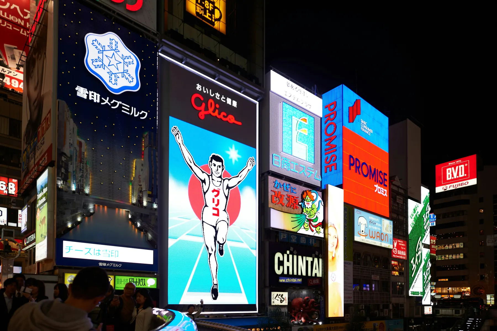
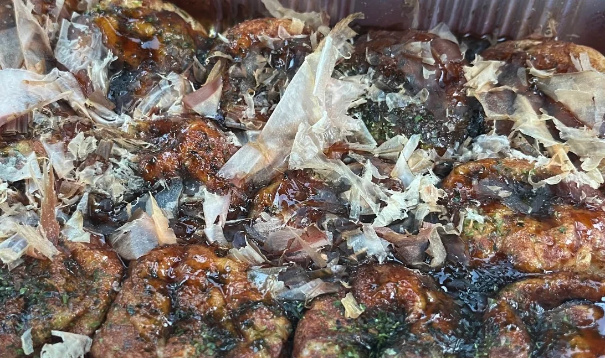

Planning to explore both Kyoto and Osaka? If you are staying for several days, I would like to share a small piece of advice from someone who has lived between the two cities for many years.
You Don’t Have to Choose
One of the questions I hear most often is: “Should I stay in Kyoto or Osaka?”
It is a good question. Kyoto is famous for its temples, gardens, and traditional streets. Osaka is known for its food, shopping, and lively atmosphere.
But if you are planning to visit both, you do not necessarily have to choose one city over the other. Sometimes, staying between Kyoto and Osaka makes the whole journey much more enjoyable.
Kuzuha Station is the starting point for ordinary day trips toward Kyoto and central Osaka.
Travel Like a Local
I have lived in this area for many years. On one day, I might spend the morning in Kyoto. On another, I might head to Osaka. There is nothing unusual about that.
We simply take the train, enjoy the day, and come home in the evening.
You can spend an exciting day exploring Kyoto or Osaka, then return to a quiet local neighbourhood at night. That is simply everyday life here.
Between day trips, ordinary neighbourhood scenes give the journey a gentler rhythm.
Enjoy Kyoto Before It Gets Busy
Kyoto is a wonderful city. Fushimi Inari, Kiyomizu-dera, Gion—and of course, many more beautiful places are waiting to be discovered.
My advice is simple: go early.
The peaceful atmosphere in the morning is something special. Then, when the streets begin to fill with visitors, find a small café, enjoy a slow lunch, or simply take your time.
A trip does not always have to be about seeing more places. Sometimes slowing down makes the memories even better.
An early start lets you experience the quieter side of Fushimi Inari. Photo: Freddie Marriage / Unsplash.Kiyomizu-dera is part of a rewarding walk through Kyoto’s eastern hills. Photo: Martin Falbisoner / Wikimedia Commons, CC BY-SA 4.0.When evening approaches, the streets around Gion take on another atmosphere. Photo: Chi King / Wikimedia Commons, CC BY 3.0.
The next day, perhaps you will head to Osaka. Walk through Umeda, try fresh takoyaki in Dotonbori, or relax in a Japanese hot spring before heading home.
Then, in the evening, you simply return to the same little house.
After a few days, you may find yourself feeling less like a tourist—and a little more like someone living in Japan.

Osaka’s energy feels most vivid when Dotonbori lights up after dark. Photo: Kamaruld Salleh / Unsplash.

A plate of hot takoyaki is one of the simple pleasures of an Osaka day.
A House, Not Just Another Hotel
Hotels are convenient. And The Showa House is not a hotel. It is an old Japanese home.
When guests stay here for several days, many of them tell us the same thing: “It feels like coming home.”
You wake up in the same room each morning. You know where everything is. The neighbourhood starts to feel familiar.
Instead of checking into another hotel, you are simply coming home after another day of exploring.
Returning to the same quiet rooms each evening gives a longer Kansai stay a sense of continuity.The familiar light of the same room can become part of the journey.
If You’re Staying for Several Days
If you are visiting Japan for only one night, staying in Kyoto or Osaka city is a perfectly good choice.
But if you are planning to stay for three, four, or five nights—and hope to enjoy Kyoto, Osaka, and even Nara—I would like to suggest a different kind of journey.
Choose one comfortable home. Leave your suitcase where it is. Travel light each day. Come back to the same peaceful place every evening.
Personally, I think that is one of the nicest ways to experience Japan.
After a busy day in Kyoto, Osaka, or Nara, the journey ends somewhere quiet.
Many people come to Japan hoping to see famous places. And they should. They are beautiful.
But after welcoming guests from all over the world, I have noticed something. The memories people treasure most are often the quiet ones.
The sound of cicadas through an open window. A friendly conversation with someone who lives in the neighbourhood. Returning to the same little house after a day full of adventure.
Perhaps that is what makes a journey feel less like a vacation—and a little more like living in Japan.
If that sounds like your kind of journey, perhaps our little Showa House will feel like home for a few days.
Often it is the quiet, familiar details of a home that remain in a traveller’s memory.